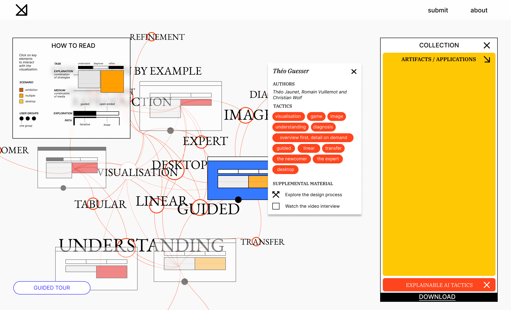
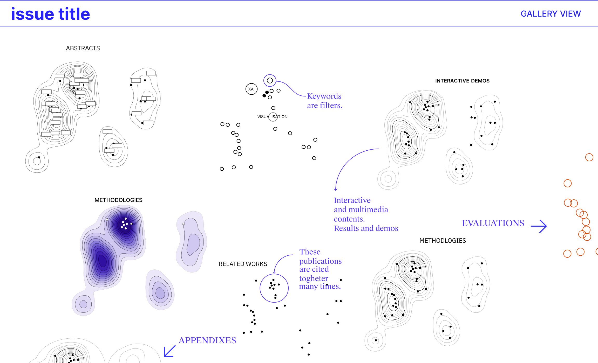

Beatrice Gobbo
Department of Design Politecnico di Milano beatrice.gobbo@polimi.itDepartment of Computer Science University of Konstanz menna.el-assady@uni.kn
A Digital Ideation Space for Explainable Aritifical Intelligence Strategies
☟ Download the Publication
CHI21 Workshop Operationalizing Human-Centered Perspectives in XAI Sat. May 8 & Sun May 9, 2021 @ 1300 EDT/ 1900 CEST
Exploring Machine Learning Research in an Interactive Virtual Museum
☟ Download the Publication
ICLR 2021 Workshop Rethinking ML Papers Friday, May 7 2021 800 EDT/ 1900 CEST